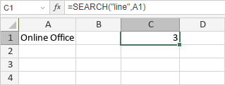

SEARCH/SEARCHB funkcija
SEARCH/SEARCHB funkcija je jedna od funkcija za tekst i podatke. Koristi se za vraćanje pozicije specificiranog podniza u stringu. SEARCH funkcija je namenjena jezicima koji koriste jednobajtni karakter set (SBCS), dok je SEARCHB namenjena jezicima koji koriste dvobajtni karakter set (DBCS) kao što su japanski, kineski, korejski itd.
Sintaksa
SEARCH(find_text, within_text, start_num)
SEARCHB(find_text, within_text, start_num)
SEARCH/SEARCHB funkcija ima sledeće argumente:
| Argument | Opis |
|---|---|
| find_text | Podniz koji se traži. |
| within_text | String u kojem se vrši pretraga. |
| start_num | Pozicija od koje počinje pretraga. Opcioni je argument. Ako se izostavi, funkcija će pretragu izvršiti od početka within_text. |
Napomene
SEARCH/SEARCHB funkcija nije osetljiva na velika i mala slova.
Ako funkcija ne pronađe podudaranja, vraća #VALUE! grešku.
Kako primeniti SEARCH/SEARCHB funkciju.
Primeri
Slika ispod prikazuje rezultat koji vraća SEARCH funkcija.
